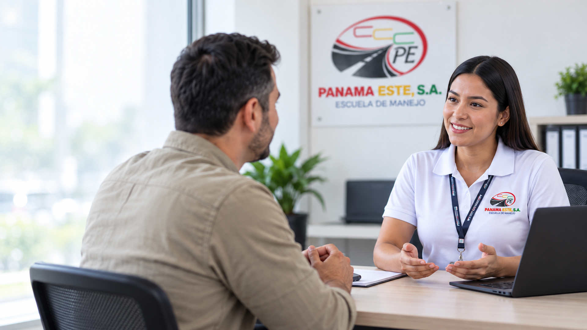
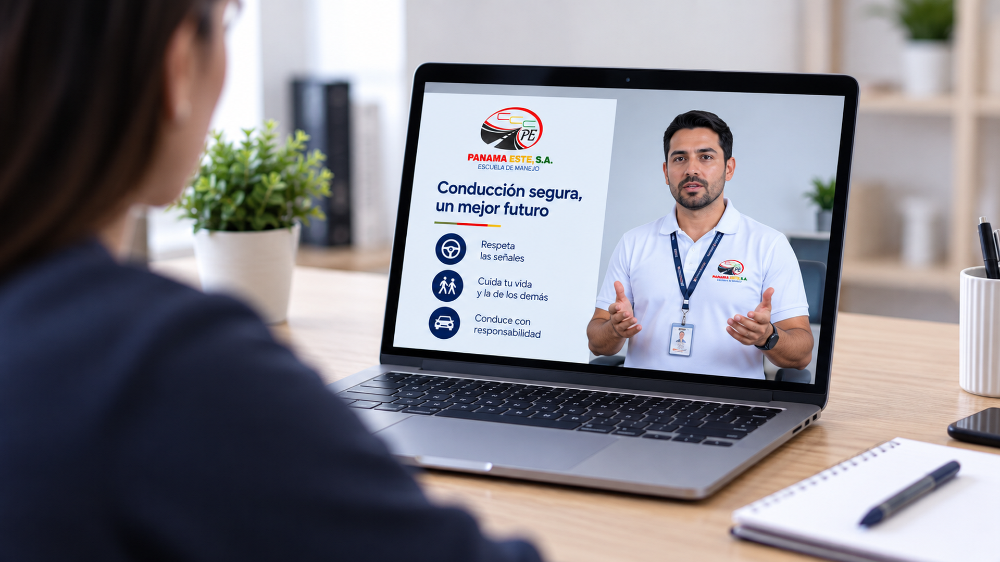

Primera infracción
3meses
Conoce el tiempo de suspensión correspondiente y completa el seminario requerido para continuar tu proceso.
◉ Consultar mi caso
Para continuar el proceso, debes haber cumplido el período establecido en tu resolución.
El período debe estar cumplido antes de gestionar la recuperación de la licencia.

Debes completar un seminario virtual impartido por uno de nuestros facilitadores.
La sesión aborda los efectos del alcohol en la conducción, sus consecuencias, la prevención de riesgos y la toma de decisiones responsables en la vía.
El valor del servicio depende de si corresponde a una primera, segunda, tercera o posterior infracción.
Consulta el precio aplicable a tu situación.
Además de alcoholemia, también atendemos casos de piratería, regatas y exceso de velocidad. Si tu situación corresponde a alguno de estos procesos, podemos orientarte sobre los requisitos y pasos a seguir.
La escuela imparte el seminario y entrega la certificación correspondiente. El levantamiento de la restricción y la devolución de la licencia dependen de la autoridad competente y del cumplimiento de los requisitos aplicables.